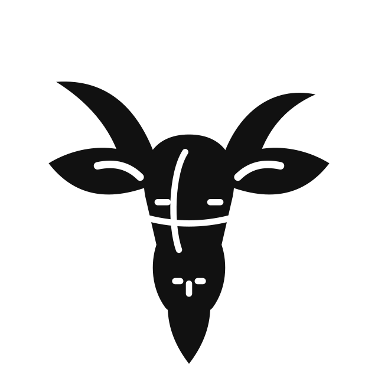
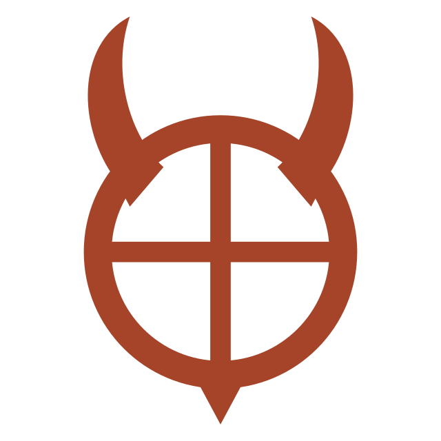

 Cream favicon · original SVG-local media rule
Cream favicon · original SVG-local media ruleActual production SVGs. Light/dark media rule tested in embedded original icon.svg. Artifact fixture; no live Next route.


Cream favicon · original SVG-local media ruleExisting CSS footprints: desktop208px · 390px phone109px · 320px phone90px.